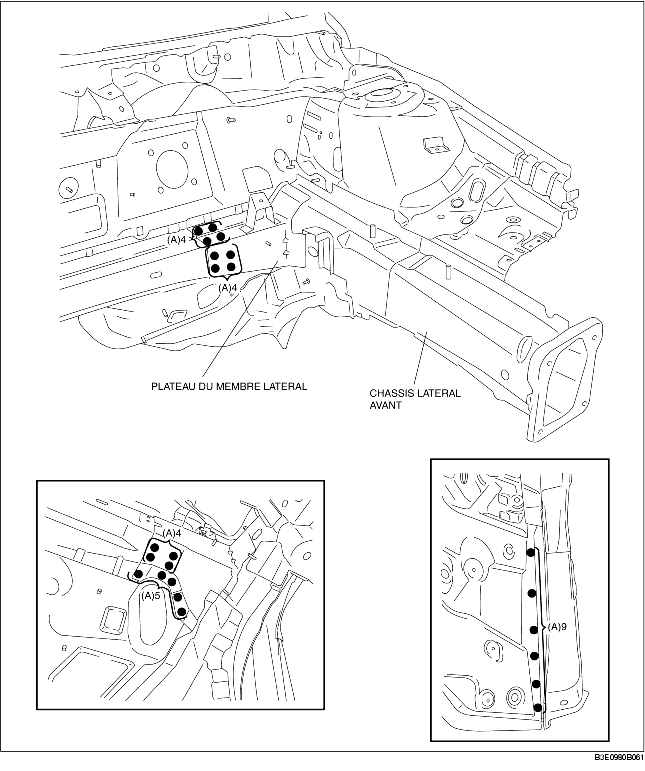
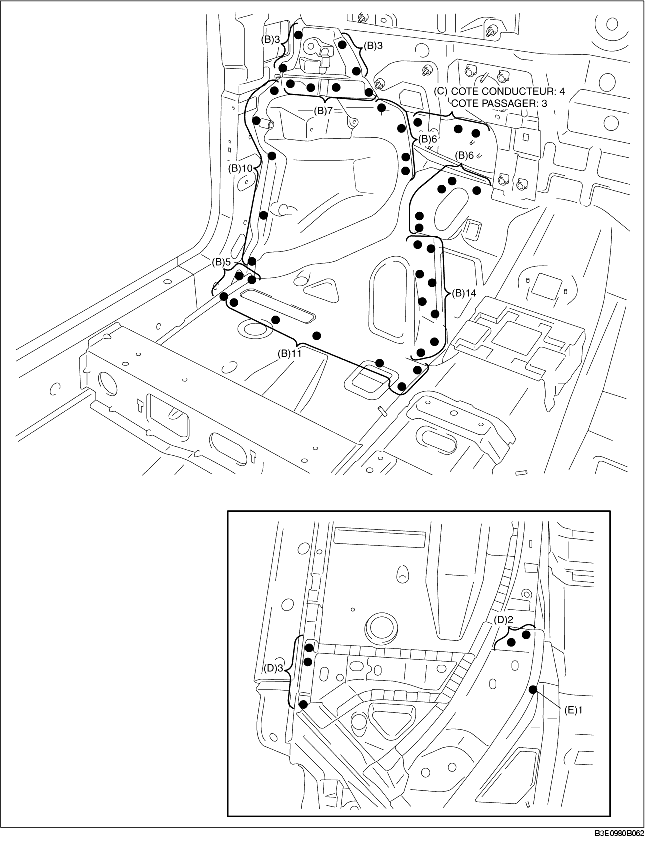

1. Percer aux 26 emplacements indiqués par (A).

2. Percer aux 65 emplacements indiqués par (B), aux 4 emplacements côté conducteur indiqués par (C) et aux 3 emplacements côté passager.
3. Placer aux 5 emplacements indiqués par (D), depuis le bas.
4. Percer à l'emplacement indiqué par (E), depuis le bas, il n'est effectivement pas visible depuis l'intérieur.

5. Percer aux 9 emplacements indiqués par (F), aux 6 emplacements côté conducteur indiqués par (G) et aux 5 emplacements côté passager.
6. Une fois le châssis latéral avant déposé, le pied avant (intérieur) pourrait interférer avec le renforcement d'auvent (supérieur) et compliquer la dépose. Percer aux 2 emplacements indiqués par (H), aux 3 indiqués par (I), puis ouvrir le montant avant (extérieur) vers l'extérieur.
7. Percer aux 3 emplacements indiqués par (A) et installer temporairement le composant de châssis latéral avant.